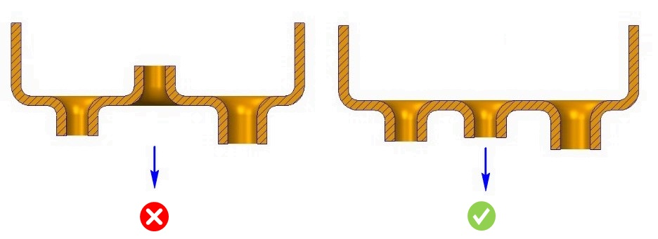

製造および段取りを容易にするため、板金フィーチャは同一平面の片側に配置されている必要があります。
治具などの追加開発コストを回避するため、あらゆる種類の板金フィーチャは板金の同一側に配置される必要があります。また、製造を容易にするためにも、板金フィーチャの大部分は板の片側に配置されていることが望まれます。
このルールにより、すべてのフィーチャが選択された板金の片側で製造されることが保証されます。
